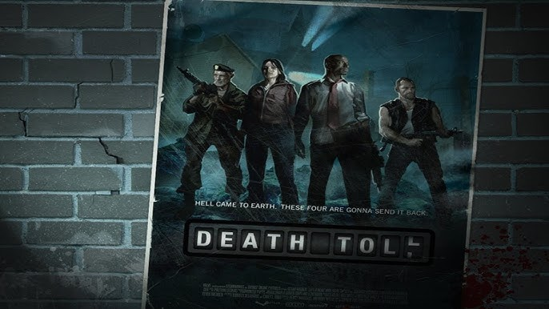
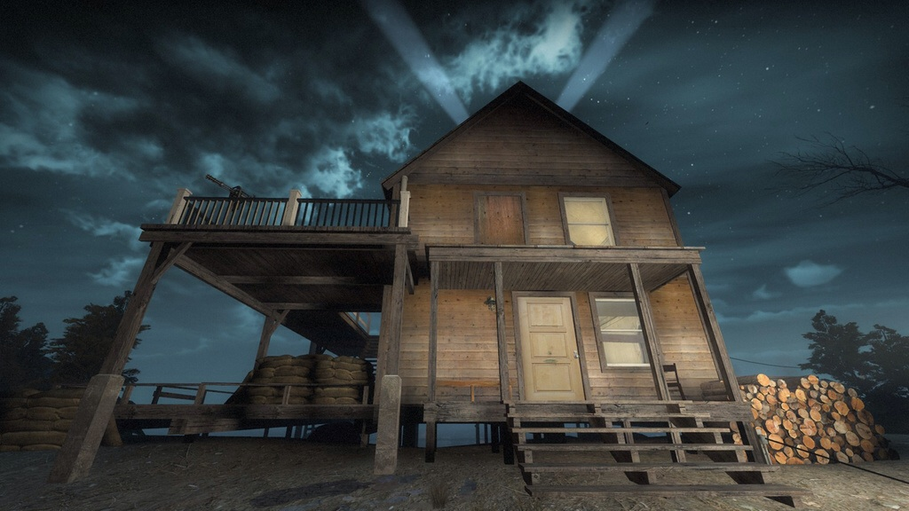

"Death Toll" inicia en una carretera desierta en las afueras de la ciudad. Los sobrevivientes originales: Bill, Zoe, Francis y Lewis tuvieron que avanzar por carreteras llenas de coches abandonados.

La campaña inicia siguiendo la carretera hasta llegar a un pequeño túnel que servirá como su refugio temporal. En esta parte los sobrevivientes deben seguir avanzando y estar atentos antes los autos abandonados, ya que los infectados pueden atacar cuando menos lo esperen, activando las alarmas y atrayendo a la horda.
Los supervivientes salen del túnel y se encuentran en las afueras de un pequeño pueblo. A pesar de esto la sección de la campaña se siente claustrofóbico al avanzar por los canales y túneles oscuros del pueblo. Los sobrevivientes después de viajar a través por áreas subterráneas y sobrevivir a constantes hordas de infectados e infectados especiales encuentran una salida del sistema de drenaje hacia la superficie, encontrando un refugio temporal.
Tras abandonar el refugio, los supervivientes recorren toda el pueblo para llegar a una iglesia que usaran como refugio. Los sobrevivientes deben atravesar los edificios abandonados del pueblo hasta que llegarón finalmente a la iglesia. Se encuentran con una persona atrincherada en el lugar y al pensar que los sobrevivientes son de la C.E.D.A. decide llamar a una horda para matarlos. Finalmente aquella persona termina mutando en un infectado y los sobrevivientes lo matan quedandose con el refugio.
La parte final de la campaña tiene lugar en una casa de botes al borde de un lago. Los sobrevivientes activaron una radio llamando un barco de rescate. Sobrevivir a los infectados es un verdadero reto considerando la distancia que hay entre la radio y el muelle donde el barco va a llegar.
